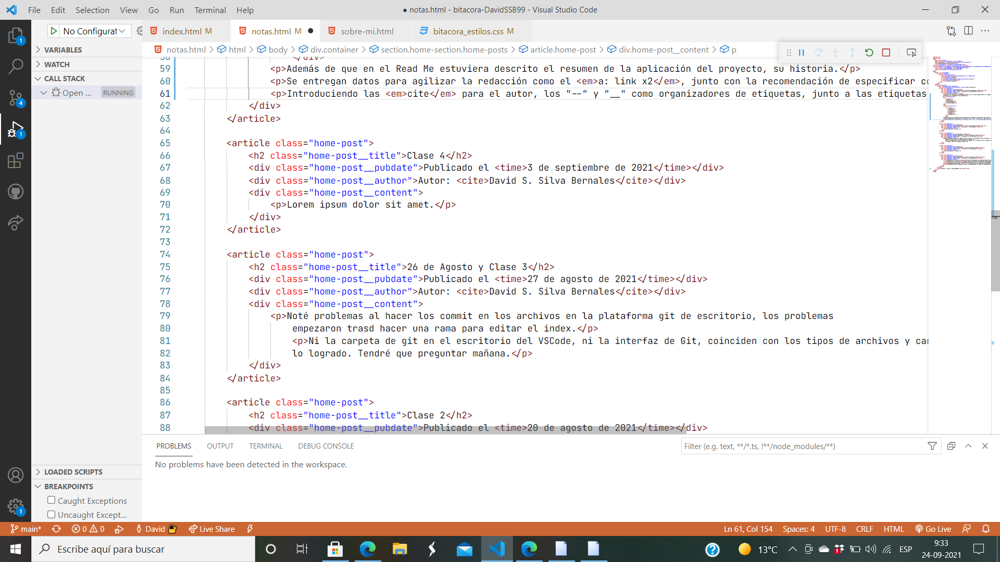

Clase 5
Publicado el
Clase práctica.
A través con Life Share, una extensión donde más de un usuario pueden editar los códigos. Aconcejando en el readme la creción de la Arquitectura de Contenido.
Ejemplo de su arquitectura de contenido:
- Título
- Fecha
- Descripción
- Presentación
- Clase Grabada
- Blog
- Entrada
- Título
- Contenido
- Fecha
- Autor
- Categoría
Además de que en el Read Me estuviera descrito el resumen de la aplicación del proyecto, su historia.
Se entregan datos para agilizar la redacción como el a: link x2, con la recomendación de especificar con las etiquetas y poder ordenar mejor código.
Introduciendo las cite para el autor, los "--" y "__" como organizadores de etiquetas, usando la clase container para ordenar de mejor manera.
